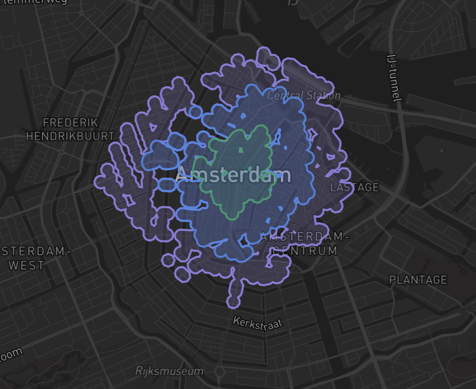

Amsterdam is full of canals, rail corridors and motorways that you can't walk across. A circle on a map says everything within 800 m is reachable, but walking has to go around. This study measures the actual detour: how much further you really walk vs straight-line distance, using OSMnx pedestrian network routing from 5 origins across the city.
One in four nearby point pairs needs more than twice the straight-line distance on foot. The isochrone shapes reveal which neighbourhoods are well-connected and which are cut off by water and infrastructure.
GitHub ↗
Walking isochrones show how far you can actually reach in 5, 10, and 15 minutes from each origin. The shapes are not circles. They follow the real pedestrian network, stopping at canals, rail lines and motorways. Notice how the shapes get pinched and irregular near water: that's the detour the canal forces. Switch origins to see how connectivity varies. Dam Square has frequent bridges and reaches far; Sloterdijk is boxed in by rail and reaches almost nothing.
Network distance divided by straight-line distance for 156,436 sampled pairs. The tail is where water, rail corridors and the ring motorway force long detours. The canal ring has fewer extreme detours because its grid is denser and bridges are frequent.
| Detour ratio | City pairs | City share | Ring pairs | Ring share |
|---|
Same ten minutes, different city. Sloterdijk reaches zero supermarkets in a 65 ha area. Muiderpoort reaches ten in a smaller 57 ha area. Reachable area is not access. What matters is what lies inside the isochrone.
| Origin | Area ha | Supermkt | Pharm | Schools | Cafes | Transit | Parks |
|---|
Mapbox returns consistently larger areas. Agreement (intersection over union) is highest in the dense centre and collapses at the periphery where Mapbox routes along arterials the pedestrian graph excludes. Running a second model establishes the size of modelling uncertainty.
| Origin | Minutes | OSMnx ha | Mapbox ha | Mapbox larger | IoU |
|---|